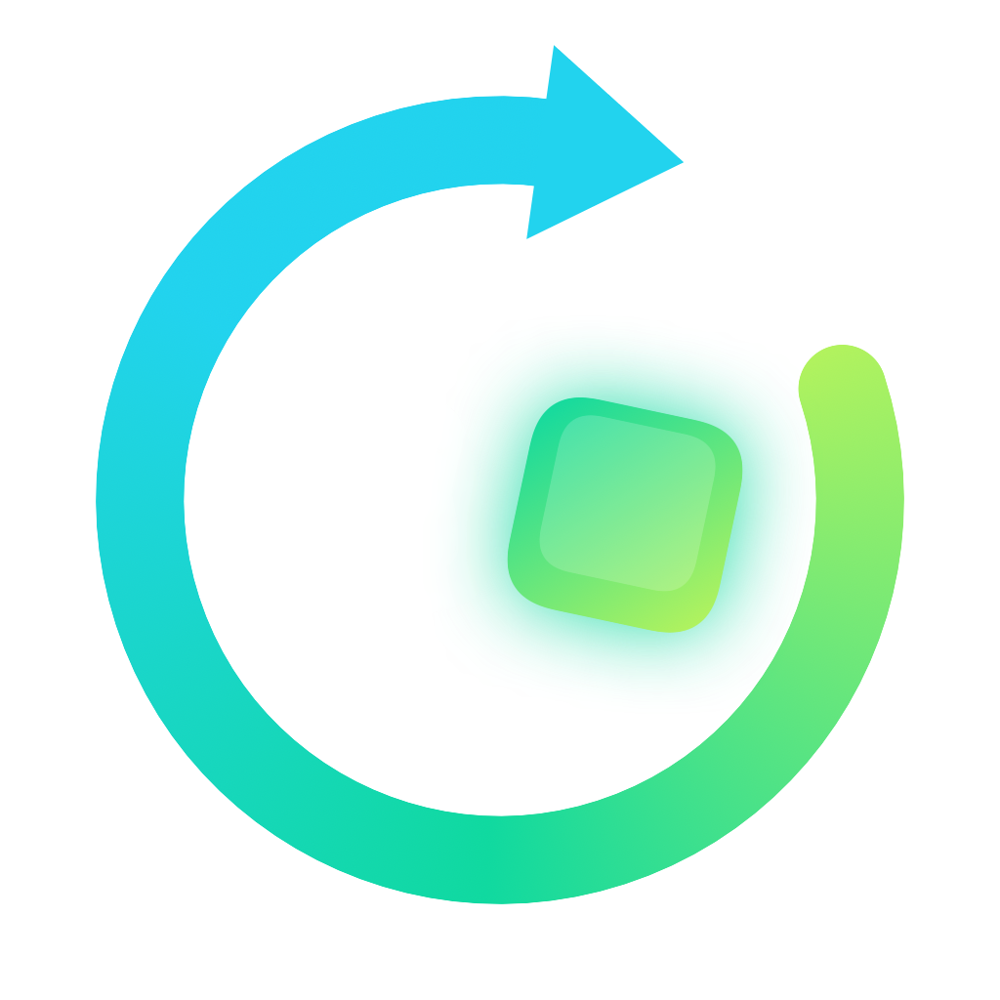

Advantage360 Pro
Wireless split keyboard with ZMK firmware. Changes are live over USB.

Remap360Connect it and Remap360 will recognize it, or pick it below.
Wireless split keyboard with ZMK firmware. Changes are live over USB.
Wired split keyboard with the SmartSet engine. Edits its v-Drive layout files.
One-piece contoured keyboard with SmartSet. Edits its v-Drive layout files.
Pro keyboards are detected over USB (Chrome, Edge). Advantage360 and Advantage2 are recognized from the files on the v-Drive you open. Nothing is uploaded: everything runs in this page.
Plug the left half into this computer with a USB data cable, then choose it from the list.
This browser can't talk to USB serial devices. Use Chrome, Edge or another Chromium browser, or the Remap360 Mac app.
On the keyboard, hold Mod and press Esc (on the stock layout). This page continues by itself.